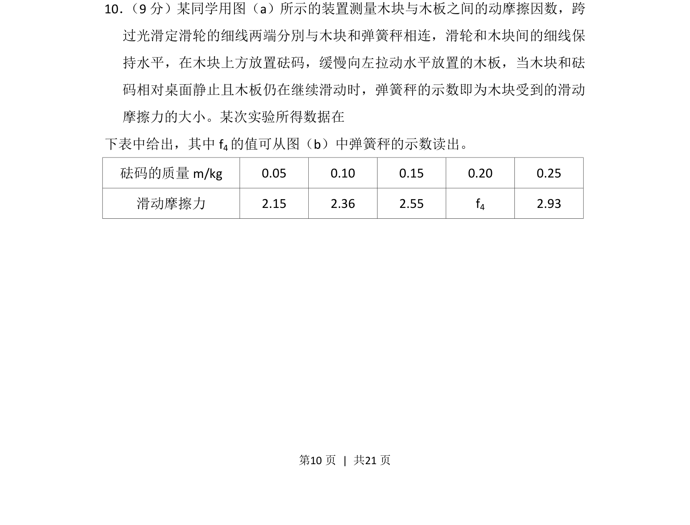
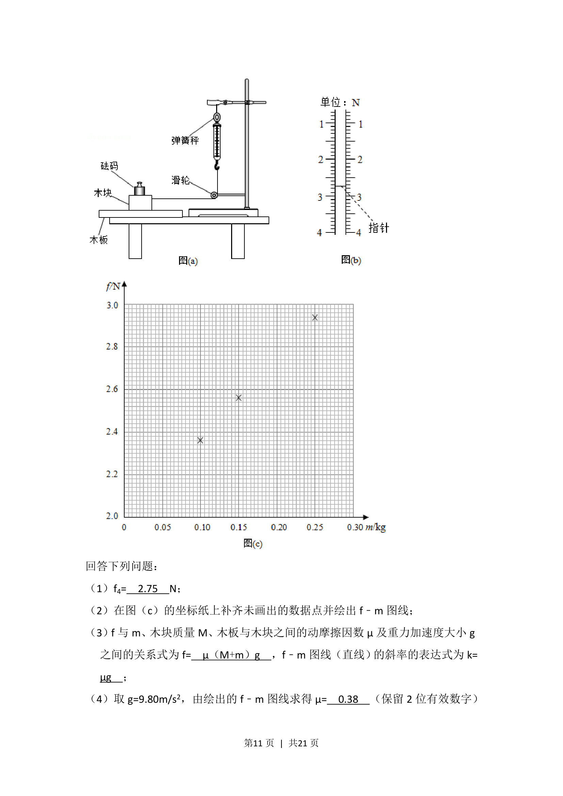
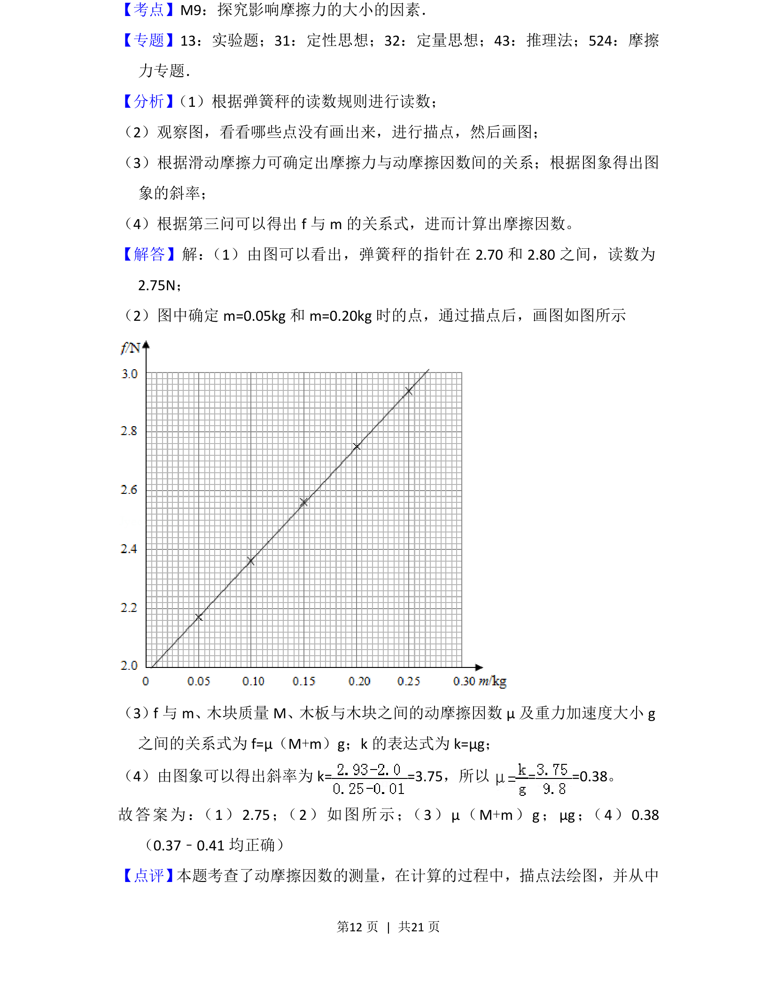
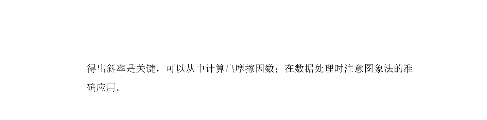

2018-新课标Ⅱ-10
考点：滑动摩擦力 动摩擦因数 力的平衡 实验数据处理
题面



摘要
测量木块与木板间动摩擦因数，利用二力平衡通过弹簧秤读数获取滑动摩擦力并处理数据。
关联考点
答案与解析


📄 原 PDF 第 10 页：
素材/真题/吉林/2008-2024·（吉林）物理高考真题/2018年高考物理试卷（新课标Ⅱ）（解析卷）.pdf
题干文本
10． （9分）某同学用图（a）所示的装置测量木块与木板之间的动摩擦因数，跨 过光滑定滑轮的细线两端分別与木块和弹簧秤相连，滑轮和木块间的细线保 持水平，在木块上方放置砝码，缓慢向左拉动水平放置的木板，当木块和砝 码相对桌面静止且木板仍在继续滑动时，弹簧秤的示数即为木块受到的滑动 摩擦力的大小。某次实验所得数据在 下表中给出，其中f 4的值可从图（b）中弹簧秤的示数读出。 砝码的质量m/kg 0.05 0.10 0.15 0.20 0.25 滑动摩擦力 2.15 2.36 2.55 f4 2.93